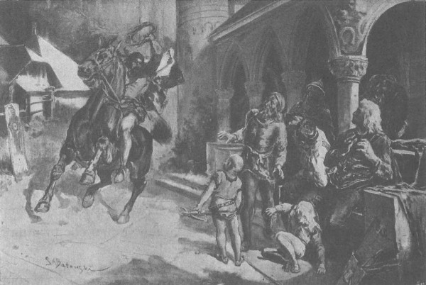

Một năm sau, đại thống lĩnh Konrad qua đời. Cậu Jaśko trang Zgorzelice, em trai của Jagienka, là người đầu tiên nghe tin ở Sieradz về cái chết của ông và việc Ulryk von Jungingen được bầu chọn, cũng là người đầu tiên đưa tin ấy về Bogdaniec, khiến trái tim và tâm hồn mọi người rúng động, ở nơi ấy cũng như khắp các tư dinh của giới quý tộc. “Sẽ đến thời chưa từng có!” Ông Maćko trang nghiêm tuyên bố, còn Jagienka thì dắt các con đến trước mặt Zbyszko ngay từ phút đầu hay tin để từ biệt, như thể chàng sẽ lên đường ngay ngày hôm sau. Tuy biết chiến tranh không thể bùng lên nhanh như lửa trong lò, nhưng ông Maćko và Zbyszko tin rằng nó nhất định sẽ đến, và họ bắt đầu chuẩn bị. Họ chọn ngựa, giáp phục, tập luyện đội hình chiến binh, gia nhân, các trưởng ấp, những người mà theo luật Đức [253] có nghĩa vụ phải hiến ngựa để tham gia chinh chiến, và các quý tộc nghèo - những hiệp sĩ lang thang - vui mừng được liên kết với những người giàu có hơn. Tại tất cả các công quốc và tỉnh trấn khác, người ta cũng làm những việc ấy, khắp nơi vang lên tiếng búa đập chí chát trong lò rèn, những bộ giáp phục cũ được lau sạch, cương thắng và dây đai ngựa được chùi kỹ bằng mỡ, xe cộ được sửa sang, lương thảo được tích trữ với những khẩu phần ngũ cốc và thịt hun khói. Trong các nhà thờ vào ngày Chúa nhật và các ngày lễ, người ta hỏi nhau tin tức mới và không vui khi nghe mọi sự vẫn yên ổn, bởi lẽ trong dạ mỗi người đều mang một dự cảm sâu sắc rằng phải chấm hết với kẻ thù khủng khiếp này của cả dân tộc, rằng cả vương quốc sẽ không thể phát triển hòa bình và yên ổn làm ăn, một khi bọn hiệp sĩ Thánh chiến không bị vặn cho gãy răng và chặt đứt tay phải, theo lời của Thánh nữ Brygida.
Ở Krześnia, người ta đặc biệt vây quanh ông Maćko và Zbyszko như những người hiểu rõ về Giáo đoàn và cuộc chiến với Đức. Họ không chỉ hỏi tin tức, mà còn hỏi cách thức đấu với quân Đức: đánh chúng cách nào tốt nhất, giao chiến với chúng ra sao, những gì chúng trội hơn và những gì kém dân Ba Lan, nên phá áo giáp chúng bằng rìu hay bằng kiếm, sau khi mũi đòng đã gãy?
Đó cũng là những điều mà hai chú cháu đều am tường, vì vậy cả hai rất được chăm chú lắng nghe, nhất là khi ai cũng tin rằng cuộc chiến này sẽ không dễ dàng, sẽ phải đương đầu với giới hiệp sĩ thượng thặng nhất của mọi quốc gia, không phải chỉ là chuyện hạ một kẻ thù lang thang nay đây mai đó, mà là một cuộc đấu sinh tử đến kiệt sức hoặc chết. Các hiệp sĩ lang thang bảo nhau: “Nếu cần, thì chơi - hoặc chúng chết, hoặc ta chết.” Và với thế hệ đã mang sẵn trong tâm hồn một linh cảm về sự vĩ đại của tương lai, thì lòng khát khao không mất đi mà trái lại, nó lớn lên từng giờ từng ngày, người ta hành động không vì lời ca ngợi hay khoe khoang trống rỗng, mà nghiêm nghị, tập trung cao độ và sẵn sàng hy sinh tính mạng.
- Cái chết đã ghi sẵn, cho ta hoặc chúng.
Trong khi đó, thời gian trôi đi dài đằng đẵng, mà vẫn chưa có chiến tranh. Người ta đã nói về những bất hòa giữa đức vua Władysław và Giáo đoàn, rồi về vùng đất Dobrzyn, dù nó đã được mua từ nhiều năm trước, và về các tranh chấp biên giới, về chuyện hai bên giằng co cái xứ Drezdenko [254] mà nhiều người lần đầu tiên trong đời được nghe nói đến - nhưng vẫn chưa có chiến tranh. Một số người thậm chí bắt đầu nghi ngờ không biết liệu có chiến tranh hay không, bởi chuyện tranh chấp luôn luôn xảy ra, nhưng thường chỉ kết thúc bằng các hội đàm, hiệp ước và các đoàn sứ giả. Có tin đồn rằng đã có đoàn sứ giả Thánh chiến đến Kraków, rồi đoàn sứ giả Ba Lan đã tới thành Malborg. Người ta bắt đầu nói về sự trung gian hòa giải của các đức vua Séc và Hungary, thậm chí ngay cả chính Đức Giáo hoàng, ở xa Kraków, người ta không thể biết chuyện gì chính xác, họ phải nghe những tin tức hỗn độn, và thường là quái dị đến mức không tưởng, nhưng vẫn chưa có chiến tranh.
Rốt cuộc, chính ông Maćko, người đã nhớ quá nhiều lời đe dọa chiến tranh và các hiệp ước, cũng không biết nên nghĩ sao về mọi chuyện, và ông quyết đến Kraków để tìm kiếm những tin tức đáng tin cậy hơn. Ông lưu lại đó không lâu, chỉ sáu tuần đã trở về - với khuôn mặt rạng rỡ hơn nhiều, ở Krześnia, khi bị giới quý tộc háo hức tin tức mới vây quanh như thường lệ, ông trả lời nhiều câu hỏi chỉ bằng một câu hỏi lại:
- Thế các ông đã mài sắc mũi đòng và lưỡi rìu cả chưa?
- Chuyện gì thế? Ông nói xem nào! Vì Chúa! Có tin gì mới? Ông đã gặp ai vậy? - Họ hỏi dồn từ tứ phía.
- Tôi đã gặp ai ư? Hiệp sĩ Zyndram xứ Maszkowice! Tin gì mới ư? Tin là sẽ sắp phải thắng yên cương!
- Chúa ơi! Chuyện thế nào? Ông nói ngay đi!
- Thế các ông đã nghe nói về Drezdenko chưa?
- Chúng tôi nghe rồi. Nhưng ai biết ở đó có bao nhiêu lâu đài và đất đai có rộng hơn của bác ở Bogdaniec hay không.
- Chắc đó không đáng là nguyên nhân chiến tranh, hả?
- Chắc rồi, không đáng; đã từng có nhiều nguyên nhân lớn hơn, mà sau đó có chuyện gì xảy ra đâu.
- Thế các ông có biết chuyện ngụ ngôn mà hiệp sĩ Zyndram xứ Maszkowice đã nói với tôi về Drezdenko không?
- Ông kể ngay đi, vì mũ trên đầu chúng tôi sấp bốc cháy cả rồi đây này!
- Ngài nói với tôi thế này: “Một gã mù đi trên đường và bị ngã vì vấp hòn đá. Hắn ngã vì bị mù, nhưng hòn đá mới là nguyên nhân.” Drezdenko là một hòn đá như thế.
- Sao lại thế? Hả? Giáo đoàn vẫn vững lắm mà.
- Các ông không hiểu à? Thế thì tôi sẽ nói theo cách khác: khi bát nước đã quá đầy, chỉ cần thêm một giọt sẽ tràn ra.
Thế là nhiệt tình lại dâng trào, các hiệp sĩ hăng đến mức họ muốn nhảy ngay lên lưng ngựa và phi thẳng đến Sieradz, làm ông Maćko phải kìm bớt.
- Hãy sẵn sàng, - ông bảo họ, - nhưng phải kiên nhẫn chờ đợi. Họ sẽ không quên chúng ta đâu.
Vì vậy họ lại chờ, nhưng họ đã chờ rất lâu, suốt một thời gian dài, khiến nhiều người lại bắt đầu nghi ngờ một lần nữa. Nhưng ông Maćko thì không chút nghi ngờ, giống như khi thấy chim chóc kéo về ông cảm nhận được xuân sang, vì là người từng trải, từ nhiều dấu hiệu khác nhau ông biết rằng chiến tranh đang đến gần - và đó sẽ là một cuộc chiến tranh lớn.
Trước tiên là lệnh mở ngay mùa săn trong tất cả các khu rừng của vương quốc, mùa săn lớn đến mức những người già nhất cũng không nhớ đã có cuộc săn nào lớn đến thế. Hàng ngàn cư dân tập trung săn vây những đàn bò tót, trâu rừng, hươu, lợn rừng và nhiều động vật nhỏ hơn. Các khu rừng mù mịt khói trong suốt nhiều tuần nhiều tháng, và thịt muối được hun khô trong khói, sau đó được gửi đến các thành trấn, từ đó đến kho chứa tại thành Plock. Rõ ràng là thịt ấy được dành để cung cấp cho những đội quân rất đông đảo. Ông Maćko biết rõ phải nghĩ thế nào, bởi trước mỗi cuộc hành binh lớn ở Litva, đại quận công Witold cũng đã từng ra lệnh tổ chức những cuộc săn tương tự. Và cũng còn những dấu hiệu khác. Hàng đoàn nông dân bắt đầu chạy trốn từ “vùng Đức” sang vương quốc Ba Lan và vùng Mazowsze [255] . ở gần Bogdaniec, chủ yếu là các hiệp sĩ Đức từ Śląsk, và điều tương tự cũng diễn ra khắp mọi nơi, đặc biệt là ở Mazowsze. Chàng Séc quản lý điền trang Spychow ở Mazowsze đã gửi tới Bogdaniec một tá người Mazury từ đất Phổ đến tị nạn ở chỗ anh ta. Những người này xin được tham gia chiến đấu bởi họ muốn trả thù bọn hiệp sĩ Thánh chiến vì những tội ác mà chúng đã gây ra, bọn người mà lòng họ vô cùng căm ghét. Họ kể rằng một số làng vùng biên ở Phổ gần như hoàn toàn bị bỏ hoang, các chủ đất đã mang vợ con đến với các quận công vùng Mazowsze. Bọn hiệp sĩ Thánh chiến treo cổ tất cả những ai chạy trốn bị chúng bắt lại được, nhưng không gì có thể ngăn chặn được dám cư dân bất hạnh đó họ thà chết còn hơn phải sống dưới ách cai trị tàn bạo của bọn Đức. Rồi tiếp đó những người ăn mày từ đất Phổ bắt đầu tràn ra cả nước. Tất thảy đều kéo về Kraków. Họ đến từ Gdańsk, từ Malborg, từ Toruń, thậm chí từ thành Królewiec xa xôi, từ mọi thành phố và mọi vùng đất thuộc Phổ. Không chỉ có những người ăn mày, mà cả các thầy tu, các nhạc công chơi đàn đại phong cầm, đủ loại kẻ hầu người hạ của các tu viện, thậm chí cả các giáo sĩ và linh mục. Người ta kháo nhau rằng họ mang theo tin tức về những thứ đang diễn ra ở đất Phổ: nào là chuẩn bị chiến tranh, gia cố các lâu đài, nào là tập hợp binh lính, đủ các loại lính đánh thuê và hiệp khách. Người ta xì xào rằng tại Kraków, thống đốc của các tỉnh trấn và các ủy viên hội đồng hoàng gia đóng kín cửa mật đàm suốt hàng giờ liền, nghe những người Phổ và tin của họ. Trong số đó có người quay lại đất Phổ, sau lại xuất hiện ở vương quốc. Có tin từ Kraków rằng qua họ, đức vua và quý vị hội đồng biết rõ từng bước đi của bọn hiệp sĩ Thánh chiến.
Mọi thứ lại diễn ra hoàn toàn trái ngược tại thành Malborg. Một thầy tu trốn thoát khỏi thành này, nghỉ chân ở sân điền trang Koniecpol kể rằng đại thống lĩnh Ulryk và các hiệp sĩ Thánh chiến không quan tâm gì đến các tin tức từ Ba Lan, mà tin chắc rằng chỉ bằng một đòn, chúng sẽ chiếm lấy và xóa sổ toàn bộ vương quốc, “không để sót một vết nào”. Ông ta nhắc lại những lời của đại thống lĩnh nói trong bữa tiệc ở thành Malborg: “Bọn chúng càng đông, áo khoác da cừu ở Phổ sẽ càng rẻ.” Tự tin vào sức mạnh của mình và sự trợ giúp của mọi vương quốc, cả những nơi xa nhất, chúng vui mừng và say sưa chuẩn bị cho cuộc chiến.
Song, bất chấp mọi dấu hiệu chiến tranh, những sự chuẩn bị và nỗ lực, cuộc chiến không đến nhanh như mọi người mong. Chàng thừa kế trẻ tuổi của trang Bogdaniec phát chán vì phải ngồi nhà. Mọi thứ đã săn sàng, chàng khao khát vinh quang và chinh chiến, nên mỗi ngày trì hoãn đều trở nên nặng nề, chàng hay kêu ca với ông chú, như thể chiến tranh hay hòa bình tùy thuộc ở ông.
- Chú đã hứa chắc chắn là sẽ đến, - chàng nói, - sao mãi vẫn không thấy!
Ông Maćko nói:
- Anh có khôn, nhưng chưa ngoan! Anh không thấy chuyện gì đang diễn ra à?
- Nhưng đức vua sẽ quyết định ra sao vào phút cuối? Họ nói rằng đức vua không muốn chiến tranh.
- Rõ là ngài không muốn, nhưng ai, nếu không phải chính đức vua, đã hét lên: “Ta không muốn làm vua, nếu ta để mất Drezdenko”, mà bọn Đức đã lấy Drezdenko, và đến giờ chúng vẫn giữ chặt. À! Đức vua không muốn máu Ki-tô giáo phải đổ, nhưng các quý ngài ủy viên hội đồng thông minh lắm, họ cảm nhận được sức mạnh Ba Lan đang ép quân Đức vào tường. Mà chú nói anh hay là nếu không phải là Drezdenko, thì người ta cũng sẽ tìm ra chuyện khác.
- Cháu nghe là chính đại thống lĩnh Konrad đã lấy Drezdenko, mà ông ta thì vẫn luôn sợ đức vua ta.
- Ông ta sợ, vì hiểu rõ thế lực của Ba Lan hơn những kẻ khác, nhưng ông ta lại không thể kìm được lòng tham của Giáo đoàn, ở Kraków, họ nói với chú: khi bọn Thánh chiến chiếm thành Nowa Marchia, hiệp sĩ già von Ost, người thừa kế Drezdenko, đã cúi đầu thần phục đức vua, vì vùng đất ấy vốn là của Ba Lan suốt nhiều thế kỷ, nên ông ấy muốn quy thuận vương quốc. Nhưng các hiệp sĩ Thánh chiến đã mời ông ấy đến thành Malborg uống rượu và lấy được chữ ký của ông ấy. Thế là đức vua đã không còn đủ kiên nhẫn.
- Đúng là đức vua đã không thể! - Zbyszko kêu lên.
Ông Maćko nói:
- Đó chính là điều mà ngài Zyndram xứ Maszkowice đã nói: Drezdenko là hòn đá khiến gã mù bị ngã.
- Nếu bọn Đức chịu trả Drezdenko thì sẽ ra sao?
- Thì sẽ lại có một hòn đá khác. Nhưng bọn Thánh chiến sẽ không chịu nhả những gì chúng đã nuốt đâu, trừ phi ruột gan chúng bị phanh ra, điều mà Đức Chúa sẽ sớm cho chúng ta thực hiện.
- Không! - Được khích lệ tinh thần, Zbyszko kêu lên. - Konrad có thể trả, nhưng Ulryk thì không. Y quả là một hiệp sĩ không tì vết, nhưng nóng tính đến dã man.
Họ cứ nói chuyện với nhau như vậy, trong khi các sự kiện như những hòn đá bị chân người qua đường chạm phải, lăn xuống theo những sườn dốc, lao mỗi lúc một nhanh về phía vực thẳm.
Đột nhiên, có tin lan khắp cả nước rằng bọn hiệp sĩ Thánh chiến đã tấn công và cướp bóc thành Santok [256] - một thành trì cổ của Ba Lan đã nhượng cho các hiệp sĩ Joannici [257] . Đại thống lĩnh mới Ulryk đã cố ý rời khỏi thành Malborg để tránh mặt các sứ giả Ba Lan đến mừng ông ta được bầu lên chức vụ mới, và ngay từ giây phút cầm quyền đầu tiên đã ra lệnh sử dụng tiếng Đức thay cho tiếng La-tinh trong quan hệ với đức vua và dân chúng Ba Lan - rốt cuộc đã tự lộ rõ mình. Các quý ông Kraków đã âm thầm thúc đẩy cuộc chiến hiểu rằng vị đại thống lĩnh đang cố lớn tiếng hô hào chiến tranh, không chỉ lớn tiếng mà còn mù quáng và xấc xược, điều mà trong quan hệ với dân tộc Ba Lan, các thống lĩnh không bao giờ được phép, ngay cả khi sức mạnh của họ thực sự lớn hơn, còn sức mạnh của vương quốc yếu hơn so với hiện tại.
Tuy nhiên, các chức sắc của Giáo đoàn ít hăng máu hơn nhưng xảo quyệt hơn Ulryk, hiểu rõ đại quận công Witold, đã cố gắng chinh phục ông bằng những món quà tặng và những lời tâng bốc vượt xa mọi chuẩn mực thông thường, những điều tương tự có lẽ chỉ có thể tìm được từ thời người ta xây dựng đền miếu và bàn thờ cho các hoàng đế La Mã ngay khi họ còn sống. “Có hai ân nhân của Giáo đoàn,” các sứ giả Thánh chiến nói, khấu đầu dập trán trước vị phó vương của vua Jagiełło, “Đức Chúa là số một, còn thứ hai là đại quận công Witold; mọi mong muốn và mọi lời nói của đại quận công Witold đối với Giáo đoàn Thánh chiến đều thiêng liêng.” Chúng cầu xin đại quận công tha thứ vụ Drezdenko, với ý đồ là thuộc hạ của đức vua mà lại dám phán xử cấp trên của mình thì ông đã xúc phạm đức vua, và mối quan hệ tốt đẹp giữa họ sẽ chấm dứt, nếu không phải mãi mãi thì chí ít cũng là một thời gian dài. Nhưng các tôn ông của hội đồng hoàng gia biết rõ mọi thứ đang diễn ra và đang được tính toán ở Malborg, do đó đức vua cũng đã chọn Witold làm người hòa giải.
Và Giáo đoàn đã phải hối hận về sự lựa chọn ấy. Các quan chức của Giáo đoàn Thánh chiến, những kẻ dường như biết rõ về đại quận công, vẫn chưa hiểu hết ông, vì Witold không chỉ xem Drezdenko là của người Ba Lan, mà còn biết tiên đoán được mọi chuyện sẽ kết thúc ra sao - nên ông lại nâng đỡ vùng Żmudź, và ngày càng thể hiện bộ mặt dữ tợn hơn với Giáo đoàn, bắt đầu giúp cư dân ở đó bằng cách gửi nhân lực, vũ khí và ngũ cốc từ những vùng đất Ba Lan màu mỡ.
Khi có chuyện, mọi con dân ở mọi vùng đất của quốc gia rộng lớn này đều hiểu rằng giờ khắc quyết định đã điểm. Và rồi giờ phút đó cũng đến.
*
Ở trang Bogdaniec, một hôm, khi ông Maćko, Zbyszko và Jagienka đang ngồi trước cổng tòa thành nhỏ, tận hưởng thời tiết tuyệt vời và khí trời ấm áp thì bỗng xuất hiện một người đàn ông lạ mặt cưỡi con ngựa đẫm mồ hôi, ông ta kìm ngựa trước cổng, ném một thứ gì như một vòng lá bện bằng dây mây và cành thùy liễu xuống chân các hiệp sĩ, hét lên “Wici! Wici!” [258] rồi lại phóng ngựa đi tiếp.
Họ xúc động đứng bật cả dậy. Mặt ông Maćko bỗng trở nên dữ tợn và nghiêm nghị hẳn. Zbyszko vội chạy vào để phái giám mã mang vòng cành lá đi báo tin tiếp, sau đó quay ra, mắt cháy bừng như ngọn lửa, chàng thốt lên:
- Chiến tranh! Rốt cuộc Chúa đã ban cho! Chiến tranh!

Một người đàn ông lạ mặt cưỡi ngựa hét lên “Wici! Wici!” rồi lại phóng đi
- Một cuộc chiến mà trước đây ta chưa từng thấy! - Ông Maćko trang trọng nói thêm.
Rồi ông hét lên với dám gia nhân mà chỉ trong chớp mắt đã tụ tập quanh các ông bà chủ:
- Lên tháp canh thúc tù và báo động khắp bốn phía! Cử người chạy đi các làng báo cho thôn trưởng. Dắt ngựa ra khỏi chuồng, thắng xe ngay! Mau lên!
Lệnh ông chưa dứt thì gia nhân đã túa đi nhiều hướng để thi hành, những việc ấy cũng không khó, bởi người, xe, ngựa, vũ khí, giáp phục, lương thảo… đã sẵn sàng suốt một thời gian dài, giờ chỉ cần nhảy lên yên và khởi hành!
Zbyszko hỏi ông Maćko:
- Thế chú không ở nhà ư?
- Tôi ở nhà? Đầu óc anh sao thế?
- Bởi theo luật, là người đã có tuổi, chú có thể ở nhà, thêm người chăm lo bảo vệ cho Jagienka và lũ trẻ.
- Không, nghe này: Tôi đã đợi giờ phút này đến bạc cả đầu rồi đấy.
Chỉ cần nhìn vẻ mặt lạnh lùng, sắt đá của ông cũng hiểu rằng không gì có thể thuyết phục được ông. Vả lại, dẫu đã bảy mươi, người ông vẫn còn tráng kiện như cây sồi, đôi tay vẫn nhanh nhẹn vung rìu vun vút. Mặc đầy đủ giáp phục trên người, ông không còn có thể nhảy lên lưng con ngựa không yên cương, nhưng nhiều người trẻ, nhất là các hiệp sĩ phương Tây, cũng không thể làm được chuyện ấy. Ngược lại, ông sở hữu những kỹ năng hiệp sĩ ghê gớm, mà trong cả vùng không có lấy một chiến binh lão luyện như ông.
Jagienka cũng không sợ phải ở lại một mình, khi nghe chồng nói, cô đứng dậy hôn tay chàng mà bảo:
- Đừng lo cho em, Zbyszko yêu quý, tòa thành kiên cố lắm, mà anh biết em đâu phải kẻ nhát gan, với em thì cả cung nỏ lẫn mũi lao đều chẳng là thứ gì mới. Giờ đây, khi cần cứu vương quốc, không phải là lúc để nghĩ ngợi chuyện vợ con, còn nơi đây, Chúa sẽ che chở cho chúng em.
Và đột nhiên, mắt cô tràn lệ, những giọt nước mắt lăn dài trên khuôn mặt màu hoa huệ tuyệt đẹp. Rồi đưa tay chỉ đàn con trẻ, cô nói tiếp với giọng cảm động, run run:
- Ôi! Nếu chúng không còn quá nhỏ, em sẽ quỳ xuống chân anh cầu xin cho đến khi anh cho phép em đi theo, tham gia cuộc chiến này!
- Jaguś! - Zbyszko thốt lên, ôm chặt cô trong vòng tay.
Cô ôm ghì cổ chàng, cố hết sức nép chặt vào người chàng, lặp đi lặp lại:
- Chỉ cần chàng trở lại, cục vàng của em, người thương duy nhất của em, người yêu dấu của em!
- Nhớ tạ ơn Chúa mỗi ngày vì Người đã ban cho anh một người vợ hiền như thế! - Ông Maćko nói thêm với giọng khàn khàn.
Một giờ sau, lá cờ gia huy từ tháp canh được kéo xuống, báo hiệu các chủ nhân đi vắng. Zbyszko và ông Maćko cho phép Jagienka và các con đi cùng họ đến tận Sieradz, vì vậy sau bữa ăn thịnh soạn, tất cả mọi người cùng đoàn ngựa xe lên đường.
Ngày hôm ấy trời trong, không có gió. Những cánh rừng đứng yên lặng lẽ. Những đàn gia súc trên cánh đồng và các gò đống cũng nghỉ ngơi giữa trưa, nhai lại thức ăn chậm rãi như thể đang ngẫm nghĩ. Trong làn không khí khô hanh, những đám bụi màu vàng cuộn lên đây đó dọc theo các nẻo đường, phần ngọn những đám mây bụi đó cháy lấp lánh giống như những đốm lửa vô cùng sáng chói dưới ánh mặt trời. Zbyszko chỉ cho vợ con xem và nói:
- Em có biết thứ gì đang óng ánh lên trên đỉnh những xoáy bụi ấy không? Đó là những lưỡi đòng và mũi lao đấy. Hẳn là tin chiến trận đã đến khắp mọi nơi và cả dân tộc đang lên đường chống quân Đức.
Quả đúng như thế. Cách biên giới của trang Bogdaniec không xa, họ đã gặp em trai Jagienka, chàng Jaśko trẻ tuổi từ trang Zgorzelice, như người thừa kế đủ quyền năng, dắt theo ba chàng hiệp sĩ và hai mươi dân binh.
Lát sau, ngay ngã rẽ, hiện ra khuôn mặt râu ria xồm xoàm của gã Cztan trang Rogowo, người vốn không phải là bạn của gia đình Bogdaniec, dẫn theo một đoàn người, từ xa đã thét lên “Đánh chết bọn chó đẻ đi!” rồi cúi chào họ một cách tử tế, trong khi con ngựa xám của gã phi nước kiệu đi tiếp. Họ cũng gặp ông lão Wilk trang Brzozowa. Đầu ông đã hơi gật gù vì tuổi tác, nhưng ông vẫn muốn đi để trả thù cho đứa con trai bị bọn Đức giết chết ở Śląsk.
Càng đến gần Sieradz, những đám mây bụi càng xuất hiện thường xuyên hơn trên các con đường, và khi các tòa tháp thành phố hiện ra ở phía xa, toàn bộ các nẻo đường đã tấp nập những đoàn hiệp sĩ, các xã trưởng dẫn theo toán nông phu có vũ trang, tất cả kéo về nơi tập trung. Nhìn thấy những đoàn người đông đúc, tráng kiện và phương phi, kiên cường trong chiến trận, chịu đựng được gian lao vất vả, thời tiết xấu, tiết lạnh giá và tất cả những khó khăn khác, ông Maćko thấy lòng tràn ngập hứng khởi và tin chắc vào chiến thắng.